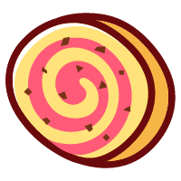

我
累计运动时长
运动历史
1529
分钟
消耗(千卡)
累计(天)
连续(天)
12685
279
35
健身
520
分钟
累计消耗
1620
千卡
跑步
17.35
公里
瑜伽
67
分钟
行走
8.2
公里
骑行
59.6
公里
每周目标
调整目标
目标7天，每天30分钟
周一
周二
周三
周四
周五
周六
周日
今日步数
10,382
步
体侧评分
来测一测自己的运动能力
身体数据
55.0
体重(kg)
16.71
BMI
180.0
身高(cm)

 瑜伽
瑜伽 体侧评分
体侧评分